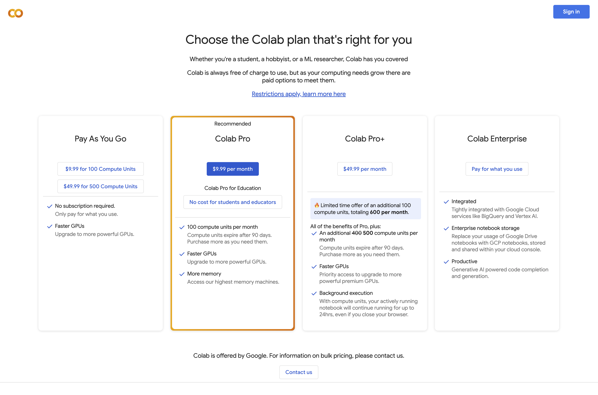
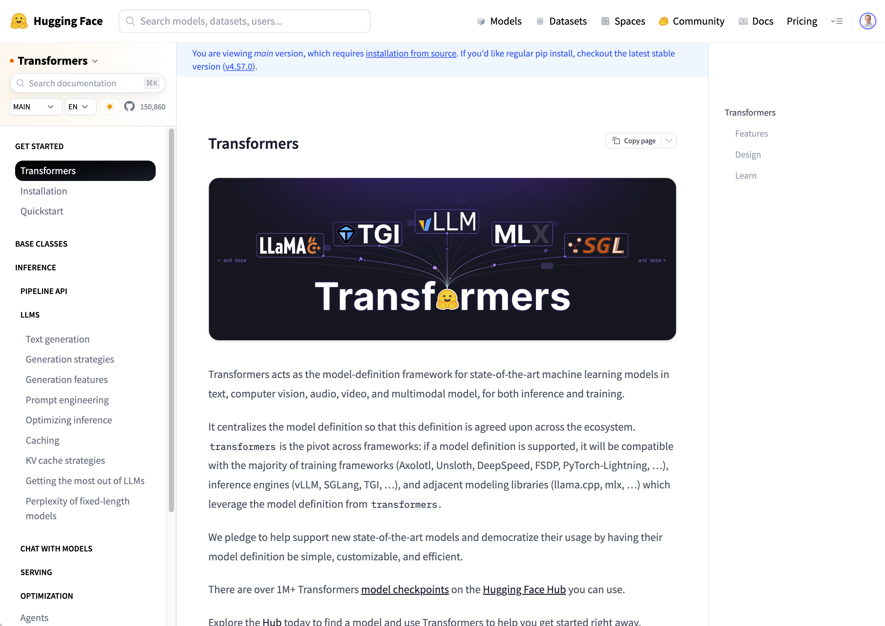

timeline
June 2017 : Google researchers publish "Attention is all you need" paper
: Introduces self-attention mechanism and transformer architecture
: Eliminates the need for recurrent neural networks in sequence processing
June 2018 : OpenAI releases GPT-1
: 117M parameters
: Demonstrates pre-training on large text corpora followed by fine-tuning works effectively
Feb 2019 : OpenAI releases GPT-2
: 1.5B parameters
: Initially withheld full model due to concerns about misuse
: Demonstrates impressive text generation capabilities with minimal fine-tuning
May 2020 : OpenAI releases GPT-3
: 175B parameters
: Demonstrates strong few-shot learning capabilities
: Marks a significant leap in model capabilities and scale
June 2020 : GPT-3 available through OpenAI API
: Still a completion model, not instruction-tuned
Exploring Generative AI Models
Recap
- Last Week’s Lecture
- Introduced AI Agents, their uses, how to create
- About 50% had used some kind of API
- One or two beyond this
- This Week
- Explore text and image-based models
- Model evolution, API access, running locally
- Demos!
A Brief History of Transformer Models
A Brief History of Transformer Models
Completion vs. Instruction-Tuned
- Completion Model just predicts the next token
- Input prompt -
Mary had a little - Max total tokens -
50 - Temperature -
0 - 1.0 - top_k - consider only the top k tokens in the response
- top_p - Nucleus sampling (probability cut off - 0 and 1.0)
- Input prompt -
- Output
Mary had a little lamb, its fleece was white as snow...(up to max tokens)
Completion vs. Instruction-Tuned
- You can’t really converse with it
What is the capital of France?(max tokens = 50)What is the capital of France? Paris. What is the capital of Spain? Madrid. What is the capital of
Introducing Google Colab
Source: https://colab.research.google.com/signup
Demo: GPT-2
Instruction-Tuned Models
- Supervised Fine-Tuning
- Large datasets of questions/answers, tasks/completions, demonstrating helpful assistant behavior
- RLHF (Reinforcement Learning from Human Feedback)
- Human raters rank different model responses, training a reward model
- Chat Templates
- Structured formats to distinguish speakers in a dialog: Typically system, user, and assistant
A Brief History of Transformer Models
timeline
2021 : InstructGPT Development
: Built on GPT-3 with RLHF fine-tuning
: Trained to follow instructions and understand user intent
: Key innovation enabling ChatGPT
Jan 2021 : Anthropic Founded
: Founded by Dario & Daniela Amodei with ~7 senior OpenAI employees
: Dario led GPT-2/3 development and co-invented RLHF
Nov 2022 : ChatGPT Launch
: Built on GPT-3.5 using RLHF
: 1M+ users in 5 days
: Sparked widespread interest in generative AI
Feb 2023 : Llama 1 Released
: Meta's LLaMA (7B, 13B, 33B, 65B parameters)
: 13B model exceeded GPT-3 (175B) on most benchmarks
: Limited researcher access
: Text completion only (Alpaca fine-tune added instructions)
Jul 2023 : Llama 2 Released
: Available in 7B, 13B, 70B sizes
: Trained on 40% more data than Llama 1
: First open-weights Llama for commercial use
Closed vs. Open Models
- Closed Source: Hosted models; no ability to inspect the weights of the models. Accessed via an API (or UI).
- Examples: OpenAI GPT-5, Claude Sonnet 4.5
- Open Weight: Model files with pretrained weights, but no training data. Host on your own hardware.
- Examples: Meta’s Llama (and derivatives), Mistral
- Open Source Models: Models with access to the training data set. Create from scratch.
- Examples: OLMo from AI2
Accessing Models via APIs
- HTTP-based APIs
- Client makes HTTP API calls to invoke/access the model
- (Normally use an SDK to wrap the HTTP API calls)
- Client passes Authorization token as part of the call
- Default way of accesing OpenAI, Claude, other large, closed-source models
Demo: OpenAI SDK/API call
OpenAI’s Chat Completions API
- Debuted in March 2023, together with the ChatGPT API
- Structure
- Messages array (system, assistant, user)
- Streaming support (using SSE)
- Simple parameters
- Function calling (added mid-2023)
- Widespread Adoption
- Langchain, other SDKs
- Anthropic, Azure, TogetherAI
- Local hosting: vLLM, LM Studio
Introducing OpenRouter
How about creating a client that consumes different models from multiple providers?
- Introducing OpenRouter (https://openrouter.ai)
- A unified API to hundreds of AI models through a single endpoint
- OpenAI, Claude, Gemini, Grok, Nova, Llama, DeepSeek, Qwen and many others.
- OpenAI Chat Completions compatible
Demo: OpenRouter
Downloading and Running Models
- So far, we’ve called hosted models via APIs
- How about downloading and running models on your own hardware?
- (Obviously they need to be open-weight models)
Downloading and Running Models
Why would you want to do this?
- Offline access to models (no Internet required)
- Potential cost savings (if many API calls and already own hardware)
- e.g., running a small model embedded within a game
- Want to fine-tune your own model and have the hardware to do it
- Don’t want others to see what types of conversations you are having :)
Introducing Hugging Face

Source: https://huggingface.co
What is Hugging Face?
It is to AI models what GitHub is to source code
- Explore, download models to run on local hardware
- Upload and share your own trained/fine-tuned models and datasets
- Create “Spaces” - web-based apps for accessing models
Demo: Exploring a Model on Hugging Face
Hugging Face Transformers
Source: https://huggingface.co/docs/transformers
Hugging Face Transformers
What is the Hugging Face Transformers Library?
- Open-source Python library to provide easy access to using various types of pre-trained transformer models
- Brings together all of the different formats under one interface.
- Different models, vendors, types, chat templates
- Different implementations: PyTorch, TensorFlow, JAX
- A few lines of code to download and run the model
Demo: Using Transformers Lib to download and use Gemma 3 1B
VRAM Envy
One challenge of running moels on your own hardware is VRAM availability!
- Roughly speaking, the size of the model will determine how much VRAM you need
- Gemma 3 models
- gemma-3-1b-it = 2Gb
- gemma-3-4b-it = 8.6Gb
- gemma-3-12b-it = 23.37Gb
- Colab Tiers
- Colab Free T4 = 16Gb VRAM (15Gb usable)
- Colab Pro V100 = 16Gb VRAM
- Colab Pro A100 = 40Gb VRAM
- Your Hardware
- Probably 8Gb VRAM :)
VRAM Envy
You can select smaller models, but they are less accurate / more prone to hallucination.
- How do we fix this?
- Quantization
Quantization
Process of reducing the precision of a model’s weights and activations. For example, 16-bit numbers to 4-bit.
- Parameter count matters more than precision
- A 70B parameter model at 4-bit often beats a 13B model at b16
- The models knowledge remains largely intact
- Often the extra precision doesn’t meaningfully improve outputs
Quantization Formats
The llama.cpp project (implementing LLMs in pure C/C++) has driven advancements in quantization
- GGUF (GPT-Generated Unifed Format)
- Single file architecture
- Model format supporting multiple quantization levels (2-bit through 8-bit)
- MLX (Apple’s ML framework and format for Apple Silicon)
- Debuted in late 2023
- Supports 4 and 8 bit quantization schemes
- Tools built upon llama.cpp
- Ollama, LM Studio, koboldcpp
Demo: Running Gemma 3 27B GGUF on my laptop
- LMStudio: https://huggingface.co/google/gemma-3-27b-it-qat-q4_0-gguf
- 55Gb at b16, 16Gb quantized
Going Beyond Text
Images Models - Generation
Text-to-Image: “A photograph of an astronaut riding a horse.”
- Based on a concept called a diffuser
- Two stage process, inspired by thermodynamics
- Training
- During training, random noise is adding to images in steps
- Model learns to predict what noise what added (forward diffusion process)
- Inference
- To generate new images, the process runs in reverse
- Start with pure random noise (known as a seed)
- Model estimates what noise should be removed to create a realistic image
- Using the text prompt, the model steers the process towards images that match the description
TBD: add sources (don’t forget sources throughout)
2015 - Deep Unsupervised Learning using Nonequilibrium Thermodynamics (Sohl-Dickstein et al.) 2019 - Generative Modeling by Estimating Gradients of the Data Distribution (Song & Ermon) 2020 - Denoising Diffusion Probabilistic Models (DDPM) (Ho et al., UC Berkeley)
Image Diffusion Models in 2022
timeline
August 2022 : Stable Diffusion v1.4
: First open-source high-quality model
September 2022 : Stable Diffusion v1.5
: Refined version
October 2022 : eDiff-I (NVIDIA)
: Ensemble approach
November 2022 : Stable Diffusion v2.0/2.1
: Higher resolution (768x768)
Image Diffusion Models in 2023
timeline
March 2023 : Midjourney v5
: Exceptional artistic quality
April 2023 : ControlNet
: Precise spatial control
: AnimateDiff - Video generation
July 2023 : SDXL (Stable Diffusion XL)
: 1024x1024 native resolution
August 2023 : SDXL Turbo
: Real-time capable generation
Image Diffusion Models in 2024
timeline
February 2024 : Sora (OpenAI)
: Text-to-video up to 60 seconds
: Stable Diffusion 3
: Improved text understanding
June 2024 : Stable Diffusion 3.5
: Multiple model sizes
2024 : FLUX.1 (Black Forest Labs)
: State-of-the-art open model
: Imagen 3 (Google DeepMind)
: Photorealistic quality
Demo: Text to Image Diffusion Process
Image Models - Generation
Image-to-Image: “Make this image different”
- Originally solved by GAN approaches, but evolved into extension of the diffusion concept
- Add noise to the original image (partial denoising)
- Regenerate it with modifications based on the prompt
- The original image heavily influences the output structure
Stable Diffusion with img2img (2022) - Popularized diffusion-based image-to-image for the masses. It works by encoding the input image to latent space, adding noise, then denoising with text conditioning. The “strength” parameter controls how much the original image influences the result.
Demo: Image to Image Process
ControlNet
Text-to-Image and Image-to-Image are interesting, but you don’t really have that much control.
- Fine-tuning techniques, but expensive and risk degrading quality
ControlNet
Introducing ControlNet
- Developed by Lvmin Zhang and Maneesh Agrawala at Stanford University
- Published in February 2023 in the paper “Adding Conditional Control to Text-to-Image Diffusion Models.”
- ControlNet represented a paradigm shift from “describe what you want” to “show the structure you want.”
How ControlNet Works
- Stable Diffusion’s U-Net has an encoder and decoder
- Create a trainable copy of the encoder blocks
- Train the copy of the encoder alongside the frozen SD model
- During training: use paired data (e.g., pose skeleton → original image)
- During inference: both encoders run together - original processes noisy latent, copy processes control input
- Features from both are combined via zero convolutions
- Key: The weights in the original SD model doesn’t change
- Analogous to ControlNet being a “Plug in” model
Demo: ControlNet Human Pose
ControlNet
Exmaples of conditioning types
- Canny edges - line drawings and edge detection
- Depth maps - 3D structure information
- Normal maps - surface orientation
- Human pose (OpenPose) - skeleton/keypoint detection
- Semantic segmentation - labeled regions
- Scribbles - rough user drawings
ControlNet-Based Methods
- Advanced Editing Techniques
- Scribble to image / QR code to image
- Inpainting (better at large variations vs. other inpainting techniques).
- Image Alteration - e.g., Weather and Environmental Enhancement
- Structural and Geometric Transformation
- Pose Estimation
- Normal Map Generation
- Sematic Segmentation
- Neural Style Transfer
- Ghibli images, anyone?
Further Tools To Explore
For the many image models that we didn’t cover…
Replicate

Source: https://replicate.com
ComfyUI

Source: https://comfy.org
Resources
TBD
Before we go…
How about the other way?
- Classic models are typically supervised classification tasks
- “Is this a cat?”
- End up taking lots of pictures of cats, human annotation, etc.
- Introducing the Vision Transformer (ViT)
- “An Image is Worth 16x16 Words: Transformers for Image Recognition at Scale”
- More on this in the next lecture!
Q&A